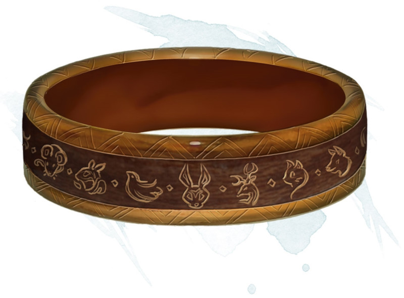

Anneau d'influence sur les animaux
[ Ring of Animal Influence ] [ Anneau d'influence animale ]
Anneau, rare
Cet anneau possède 3 charges, et il récupère 1d3 charges dépensées chaque jour à l'aube. Tant que vous êtes équipé de cet anneau, vous pouvez utiliser une action pour dépenser 1 de ses charges pour lancer l'un des sorts suivants :
• Amitié avec les animaux (sauvegarde DD 13)
• Peur (sauvegarde DD 13), vous ne pouvez cibler que les bêtes qui ont une valeur d'Intelligence inférieure ou égale à 3
• Communication avec les animaux
• Amitié avec les animaux (sauvegarde DD 13)
• Peur (sauvegarde DD 13), vous ne pouvez cibler que les bêtes qui ont une valeur d'Intelligence inférieure ou égale à 3
• Communication avec les animaux
Dungeon Master´s Guide (SRD)
